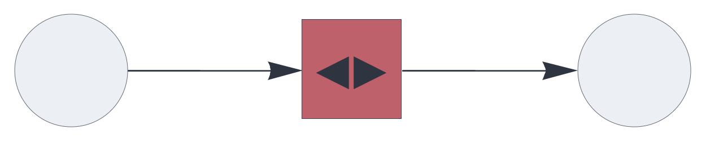

CIRCUIT COMPONENTS
heteroencoder
Hetero-associative memory component for unsupervised learning.
See also: https://creatingintelligence.org/#heteroencoder
Details and properties
- Encapsulates a hetero-associative topological memory instance.
- Maps similar sets (SDRs or SHRs) to stable symbolic tokens (SHRs) on the fly.
- Has no input for a teaching signal.
- Learns from every input it processes: an input that matches a stored pattern retrieves its token and is stored with it; an unknown input receives a new random SHR, which is stored as its output.
- Has a learning threshold equal to the pattern matching
threshold T: smaller input returns an empty result and is not
learned, because its token could never be retrieved and, being
random, could not combine with later writes. The
thresholdoption therefore also sets the learning threshold. - Performs both clustering and pattern separation; the
matching criterion (
thresholdandresidual) sets the boundary. - May receive block-coded input.
- Resolves multiset and inhibitory input prior to processing; the learning threshold applies to the resolved input.
| Property | Default | Description |
|---|---|---|
send |
required | integer, representing a single output slot |
receive |
required | one or several input slots with pathway tags |
threshold |
automatic | relative pattern matching threshold |
residual |
unlimited | non-matching query elements that may be absorbed as noise, relative to the input population; 0 requires a full match |
Use standard style options to customize the component’s appearance in circuit schematics.
Unsupervised learning
A simple hetero-encoding circuit:
{ "hyperparameters": {"default": [1000, 10]},
"dataflow": [
{"component": "input", "send": [1]},
{"component": "heteroencoder", "send": [11], "receive": [1]},
{"component": "output", "receive": [11]}
]}
Pattern separation and the residual
The heteroencoder returns a token for every input of at least
T elements: the input either retrieves a stored SHR or receives
a new random one. Smaller input returns an empty result (see the
learning threshold above). Inputs that meet the matching
criterion converge onto the same token (clustering); all others
receive unrelated tokens (pattern separation). The
threshold and residual options decide
where this boundary lies.
The two options work together. The default threshold remains
the lower bound for every query and governs small inputs, such
as a single SHR or a fragment of one. To heteroencode bundles of
multiple SHRs, add the residual option. It limits
how many query elements retrieval may discard as noise, in
multiples of the input population, so the number of elements
that must match grows with the size of the bundle.
A residual well below 1, such as 0.5, absorbs noise but still separates bundles that differ by one item, because a new item contributes close to a full population of non-matching elements. A value of 0 requires a full match.
{ "hyperparameters": {"default": [2000, 20]},
"dataflow": [
{"component": "input", "plugin": "codec", "send": [1]},
{"component": "heteroencoder", "send": [11],
"receive": [1], "residual": 0.5},
{"component": "output", "receive": [11]}
]}Code
f = Circuit(config)["function"]
a = f(["A", "B", "C", "D", "E", "G"])[0]
b = f(["A", "B", "C", "F", "G"])[0]
c = f(["A", "B", "C", "D", "E", "G"])[0]
d = f(["A", "B", "C", "D"])[0]
print(a != b, a == c, a == d)Output
True True TrueThe two overlapping bundles receive distinct tokens, and a
repeated bundle returns its token. Without
residual, b would retrieve the token
of a.
The decision is asymmetric with respect to set inclusion:
- Removing elements from a known input keeps its token, as
long as at least T elements remain:
dis a subset of the first bundle. This also holds for randomly subsampled elements. - Adding noise keeps the token as long as the number of added elements does not exceed the residual. Adding an item that was not stored together with the rest produces a new token.
- A subset contained in several stored inputs retrieves the superposition of their tokens (2P elements for two inputs). This response is not a stored entry: it reflects every encoded input that contains the subset, and learning it leaves the memory unchanged. The output is a bundle of tokens rather than a single SHR; design inputs so that this does not occur, or treat it as an ambiguous result.
An input therefore receives a new token unless its items are contained in a previously encoded input.
Source code
def heteroencoder(config):
"""
Heteroencoder A -> B. A may be partitioned. Has no input for B.
"""
receive_blocks = config.get("receive_blocks", [])
dims = [b[0] for b in receive_blocks]
params_A = [sum(b[0] for b in receive_blocks), sum(b[1]
for b in receive_blocks)]
params_B = config.get("send_blocks", [[0, 0]])[0]
m_config = dict(config)
m_config.update({
"A_parameters": params_A,
"B_parameters": params_B
})
M = Memory(m_config)
learning_threshold = M["T"]
def f(*blocks):
X = resolve_block_join_normal(list(blocks), dims)
# An input below the pattern matching threshold T can never
# retrieve its token, and the token cannot
# compose with later writes, because each new token is random.
if len(X) < learning_threshold:
return ([],)
Y = M["retrieve"](X)
# Generate new SHR encoding if retrieval fails.
if not Y:
n, p = params_B
Y = sorted(
rng.choice(
range(1, n + 1),
size=p, replace=False).tolist())
# Always learn, broadening X as an attractor.
M["store"](X, Y)
return (Y,)
result = {
"function": f,
"checks": ["arginp", "oneout"],
"shape": "square",
"fill": 11,
"size": 18,
"label": "◀▶"
}
result.update(M)
return result